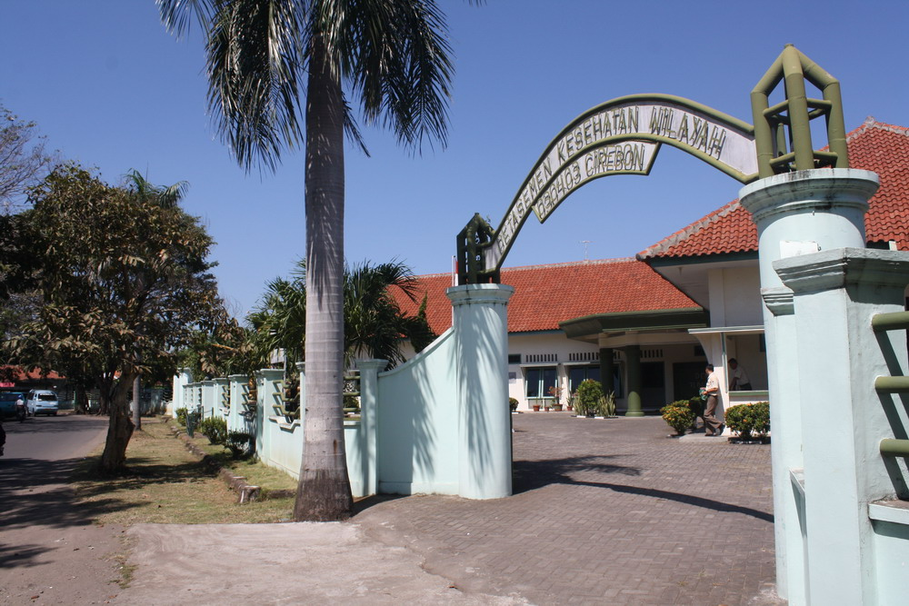
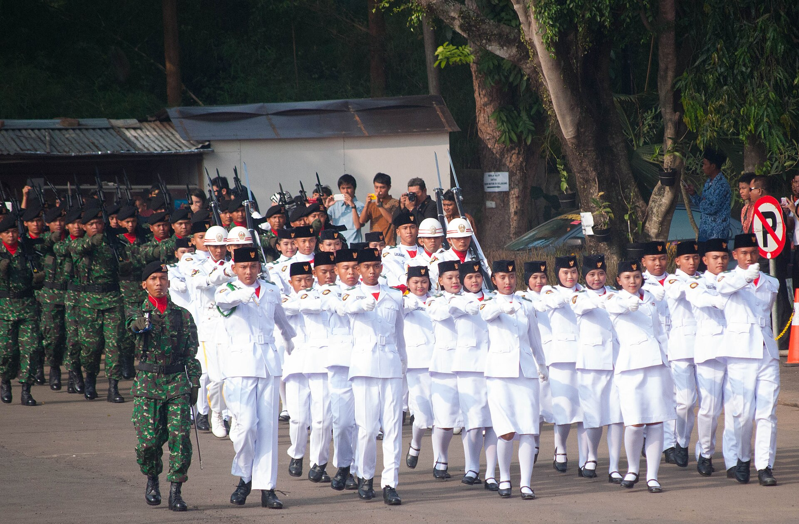

Mayjen TNI (Purn.)
Sp.M., S.H., M.M.
Ketua DPD Partai Rakyat Indonesia
Provinsi Jawa Barat
"Pengabdian bukan hanya tentang jabatan, tetapi tentang bagaimana pengalaman dapat memberikan manfaat bagi masyarakat."
— Mayjen TNI (Purn.) dr. Subandono
Perjalanan Pengabdian
Perjalanan panjang dalam dunia kedokteran, militer, manajemen, dan organisasi menjadi bagian dari pengalaman yang membentuk cara pandang terhadap kepemimpinan dan pengabdian kepada masyarakat.
Lihat SelengkapnyaEmpat Pilar


Pengabdian Kepada Negara
Pengalaman sebagai perwira tinggi TNI menjadi bagian penting dari perjalanan pengabdian dan kepemimpinan strategis.
Lihat SelengkapnyaDokter Sebelum Menjadi Pemimpin
Dedikasi di bidang kedokteran, khususnya spesialisasi mata, menjadi fondasi dalam melihat kehidupan dengan lebih humanis.
Lihat SelengkapnyaPengabdian Bersama
Ketua DPD Partai Rakyat Indonesia - Provinsi Jawa Barat
Bersama Partai Rakyat Indonesia, terus membangun komunikasi dan kedekatan dengan masyarakat Jawa Barat untuk memperkuat solidaritas.
Gabung Bersama kami